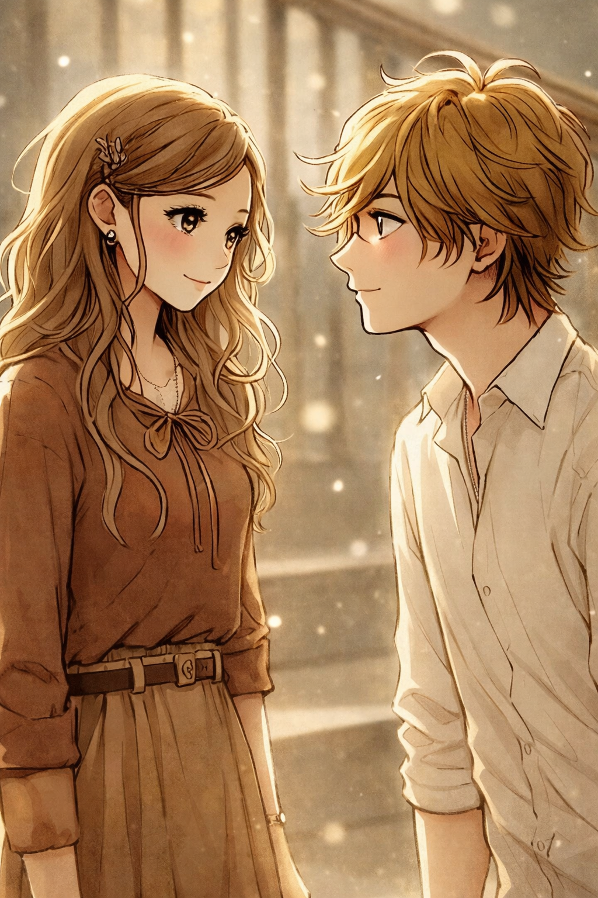
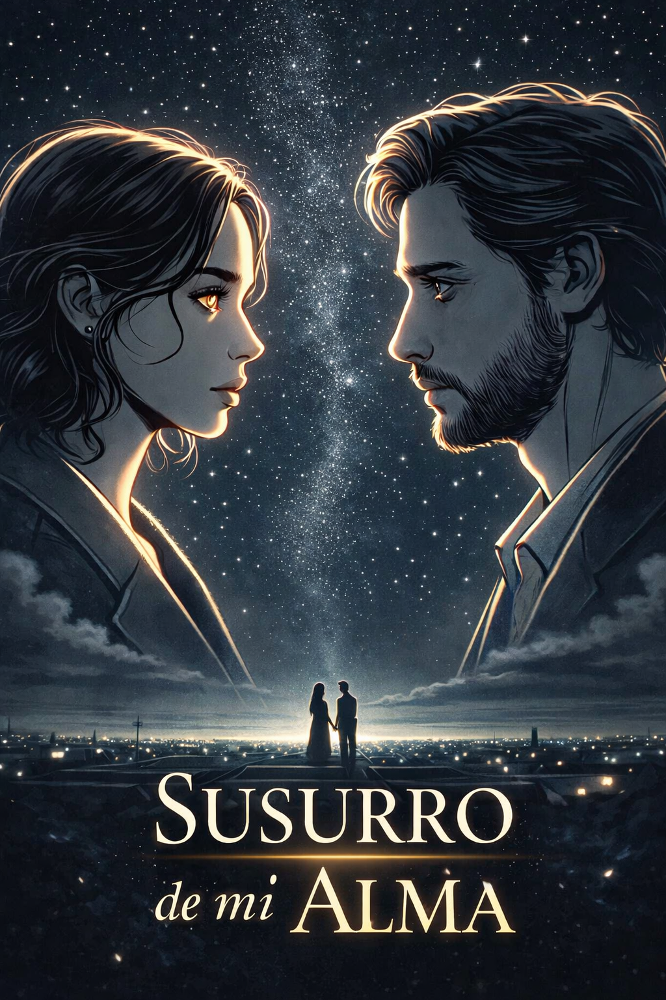
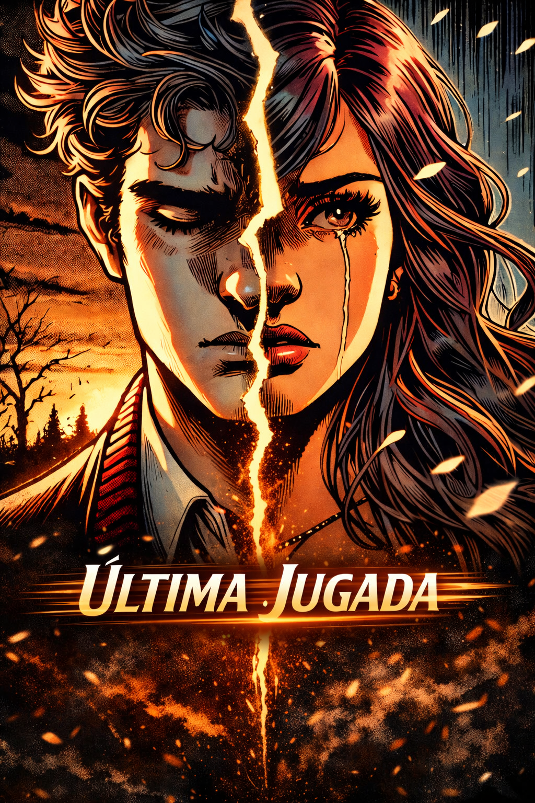
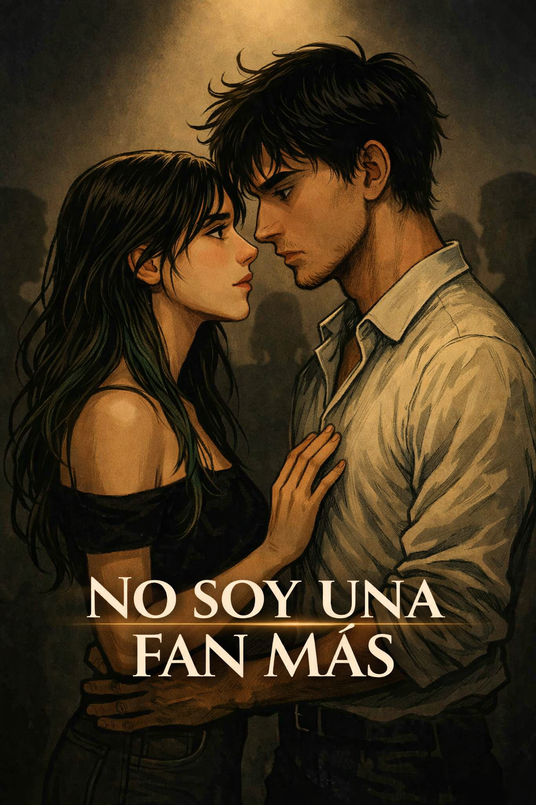
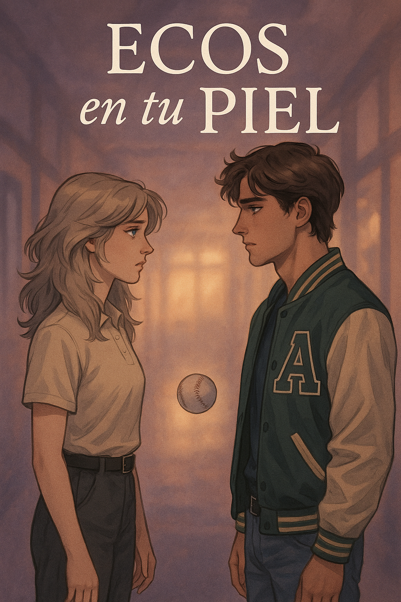
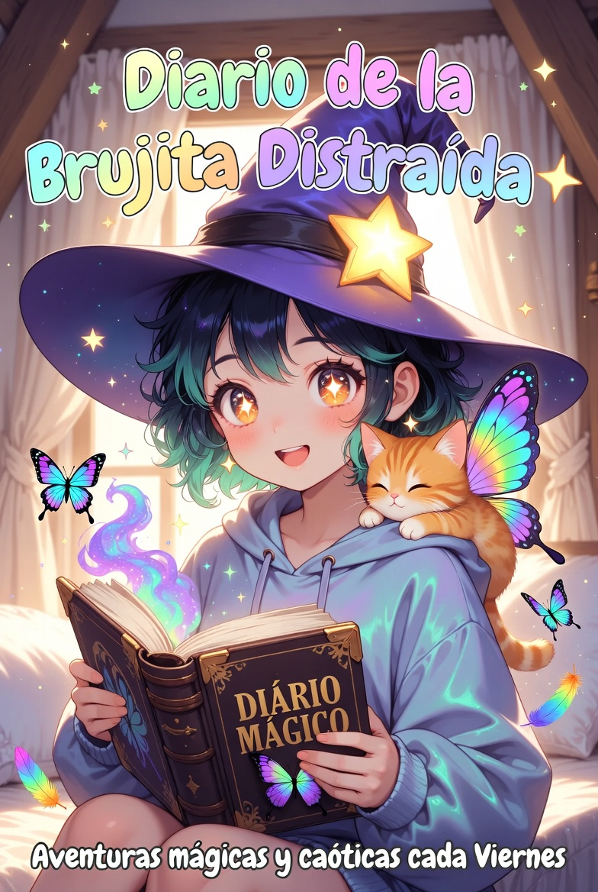

✦ DisponibleEn Busca de Tus Ojos Verdes
5 capítulos
Toca para abrir

🎧
✦ Disponible
Susurros de mi Alma
4 capítulos
Toca para abrir

⚽
✦ Disponible
Última Jugada
6 capítulos
Toca para abrir

🌟
✦ Disponible
No Soy Una Fan Más
21 capítulos
Toca para abrir

🌙
✦ Disponible
Ecos en Tu Piel
5 capítulos
Toca para abrir

🧹
Próximamente
Diario de una Brujita Distraída
Capítulos por venir

🌙
Próximamente
La Leyenda de Nabi
La Cazadora de Espíritus